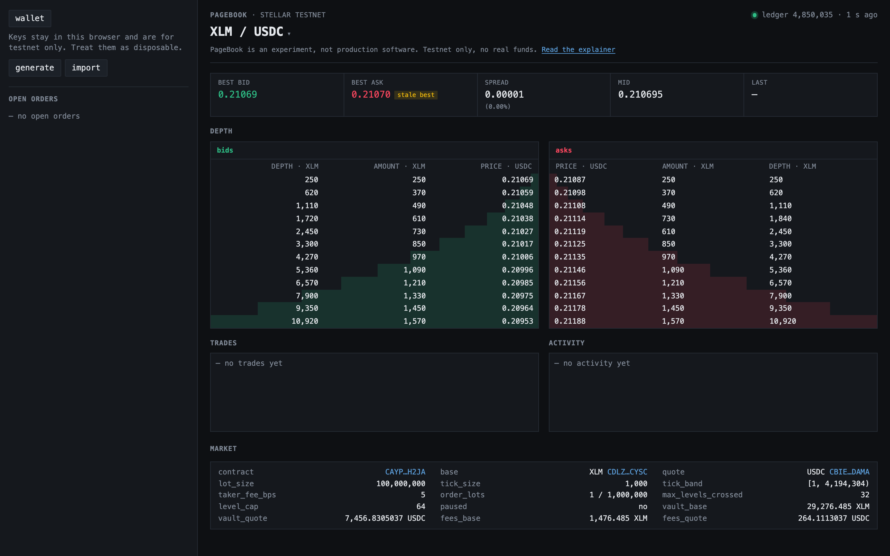
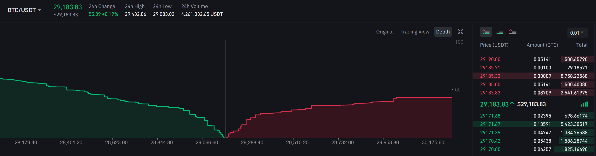

A "good enough" order book for Soroban


Example: buy 35 lots with a limit of 15,805, against 20 lots resting at 15,800 and 30 at 15,805. Steps 1 to 4 in the figure.
| Invocation, XLM/USDC market | RW entries | Instructions | Write KB declared | Fee charged |
|---|---|---|---|---|
| Rest a maker quote | 16 | 3.0M | 7.8 | 0.014 XLM |
| Replace one quote | 17 | 3.4M | 8.4 | 0.008 XLM |
| Replace 8 quotes in one batch | 52 | 11.8M | 24.1 | 0.023 XLM |
| Settle a maker order | 11 | 2.5M | 5.0 | 0.005 XLM |
| Take at the touch, 1 level | 21 | 3.3M | 10.8 | 0.009 XLM |
| Take across 4 to 6 levels | 57 | 8.7M | 30.5 | 0.024 XLM |
| Maximum take, 32 levels | 77 | 18.7M | 38.6 | 0.036 XLM |
Try it: tomerweller.com/pagebook/explainer/tick-grids.html, drag the price and watch each grid respond
Also on the list: per-market vault sub-accounts so markets sharing a token stop serializing, settle batching, permissionless market creation.
PageBook is an experiment. Do not deploy it with real funds.